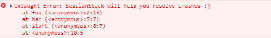
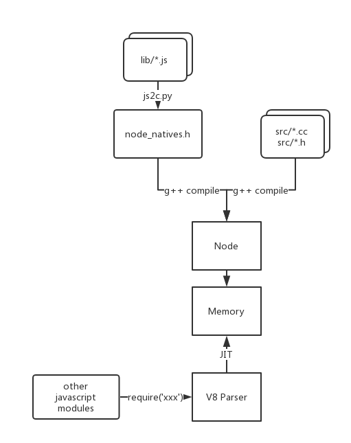
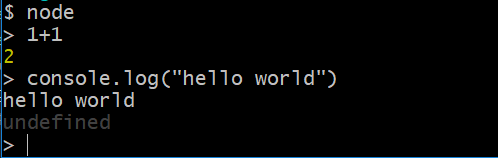
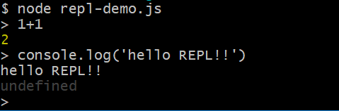

Nodejs系列-1-基础
Nodejs是什么？
官网是这样介绍Nodejs的：Node.js 是一个基于 Chrome V8 引擎的 JavaScript 运行时。
那么，NodeJs、 V8 和JavaScript 三者之前到底是怎样一种关系？这些我们经常挂在嘴边的东西，本文我们再一次进行梳理。
JavaScript 运行时
运行时是一种面向对象的编程语言（面向对象编程）的运行环境。如chrome、火狐、Edge或者Safari等浏览器每个浏览器都有一个JS运行时环境。浏览器对外暴露的供开发者使用的Web API就位于其中。除此之外，用来解析代码的Javascript引擎也是位于JS运行时环境中的。
我们可以把JS的运行时环境（浏览器V8引擎为例）看作一个大的容器，里面有一些其他的小容器。当JS引擎解析代码时，就是把代码片段分发到不同的容器里：
- 堆: V8引擎遇到变量声明和函数声明的时候，就把它们存储在堆里面;
- 栈：当引擎遇到像函数调用之类的可执行单元，就会把它们推入调用栈;
- web API 容器：事件监听函数、HTTP／AJAX请求、定时器函数等;
- **回调队列(event loop)**：回调队列会按照添加的顺序存储所有的回调函数，然后等待执行栈为空。当执行栈为空的时候，回调队列会把队列首部的那个回调函数推入执行栈。当执行栈再次为空的时候，再将此时队列首部函数推入;
- **事件循环(callback queue)**：事件循环可以被看作是JS运行时环境中的这样的一个东西：它的工作是持续的检测调用栈和回调队列，如果检测到调用栈为空，它就会通知回调队列把队列中的第一个回调函数推入执行栈。更详细可参考Nodejs系列-2-EventLoop;
- 阻塞与非阻塞I/O: 如HTTP请求处理模式;
而Node.js为Javascript提供了一个完全不一样的运行时环境. Node.js 不会提供DOM树、AJAX、以及其他的Web API。但是，在Node环境下你可以安装你需要的包来构建你的程序。
JavaScript 调用栈（Call Stack）
JavaScript 是一门单线程的语言，这意味着它只有一个调用栈，因此，它同一时间只能做一件事。
调用栈是一种数据结构，它记录了我们在程序中的位置。如果我们运行到一个函数，它就会将其放置到栈顶。当从这个函数返回的时候，就会将这个函数从栈顶弹出，这就是调用栈做的事情(ps：堆栈执行顺序是先进后出，就像往桶里面放东西)。
当达到调用栈最大的大小的时候就会发生这种情况(chrome中)：

单线程执行代码是无法充分利用CPU资源，使得运行效率低。由于JavaScript只有一个调用栈，为了提高JavaScript的执行效率，解决方案就是采用异步调用，而内部处理执行机制就是利用事件循环-EventLoop
V8 概述
V8 作为一个 JavaScript 引擎，最初是服役于 Google Chrome 浏览器的。它随着 Chrome 的第一版发布而发布以及开源。现在它除了 Chrome 浏览器，已经有很多其他的使用者了。诸如 NodeJS、MongoDB、CouchDB 等。
V8使用C++开发, 最主要的工作就是「把 JavaScript 直译成机器码，然后运行」。采用的是即时编译技术（JIT：just-in-time compiler），并没有产生二进制码或其他的中间码。
V8 In NodeJS
├── ...
├── deps
│ ├── ...
│ ├── v8
│ ├── ...
├── ...
├── lib
│ ├── ...
│ ├── buffer.js
│ ├── child_process.js
│ ├── console.js
│ ├── ...
├── node -> out/Release/node
├── ...
├── out
│ ├── ...
│ ├── Release
| ├── node
| ├── node.d
| ├── obj
| └── gen
| ├── ...
| ├── node_natives.h
| ├── ...
│ ├── ...
├── src
│ ├── ...
│ ├── debug-agent.cc
│ ├── debug-agent.h
│ ├── env-inl.h
│ ├── env.cc
│ ├── ...
├──
...
需要关注的几个目录和文件：
/deps/v8：这里是V8源码所在文件夹，你会发现里面的目录结构跟V8源码十分相似。NodeJS除了移植V8源码，还在增添了一些内容。/src：由C/C++编写的核心模块所在文件夹，由C/C++编写的这部分模块被称为「Builtin Module」/lib：由JavaScript编写的核心模块所在文件夹，这部分被称为「Native Code」，在编译Node源码的时候，会采用V8附带的js2c.py工具，把所有内置的JavaScript代码转换成C++里面的数组，生成out/Release/obj/gen/node_natives.h文件。有些 Native Module 需要借助于 Builtin Module 实现背后的功能。/out：该目录是Node源码编译(命令行运行make)后生成的目录，里面包含了Node的可执行文件。当在命令行中键入node xxx.js，实际就是运行了out/Release/node文件。
V8在NodeJs运行时的整体过程:

Node在启动的时候，就已经把 Native Module，Builtin Module 加载到内存里面了。后来的 JavaScript 代码，就需要通过 V8 进行动态编译解析运行。
Nodejs 概述
Node.js是一个Javascript运行环境(runtime)。实际上它是对Chrome V8引擎进行了封装。V8引擎执行Javascript的速度非常快，性能非常好。但是NodeJS并不是提供简单的封装，然后提供API调用，Node对一些特殊用例进行了优化，提供了替代的API，使得V8在非浏览器环境下运行得更好。如增加Buffer类来处理二进制数据等。
NodeJs的REPL
REPL（Read-Eval-Print Loop） 中文的话有翻译成：交互式解释器 或 交互式编程环境。
交互式解释器（REPL）既可以作为一个独立的程序运行，也可以很容易地包含在其他程序中作为整体程序的一部分使用。REPL为运行JavaScript脚本与查看运行结果提供了一种交互方式，通常REPL交互方式可以用于调试、测试以及试验某种想法。
基本上所有的脚本语言有REPL的。
Node.js 自身也使用 repl 模块为执行 JavaScript 代码提供交互接口。

也可以在在一个 Node.js 实例中启动多个 REPL 实例（引入nodejs 内置的repl模块）：
//repl-demo.js
const repl = require('repl');
const msg = 'message';
repl.start('> ').context.m = msg;
运行结果：
